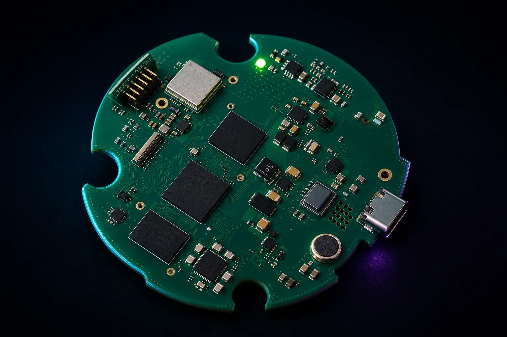

Adaptable communications
Gateway engineering that keeps radio choices replaceable as networks evolve.
Case study
A small connected platform combining audio, local sensing, Wi-Fi and cellular expansion—developed around a board-specific Linux path rather than a disposable prototype.

Challenge
The programme needed a compact device that could capture audio, run local sensing, talk to nearby networks and remain reachable when Wi-Fi was unavailable. Early work on general-purpose prototype boards proved the application idea, but not a credible route into manufacture, long-term software support or field updates.
Approach
Outcome
The team could concentrate on the voice and sensing experience while the platform provided a supported Linux base, wireless options and a route from evaluation into volume manufacture. Customisation stayed around the product need—interfaces, enclosure fit and application containers—rather than rebuilding carrier boards and bring-up for every iteration.
Case studies
Gateway engineering that keeps radio choices replaceable as networks evolve.
Controller and constrained sensor boards engineered as one data-acquisition system.
Your programme
Share the audio, sensing, connectivity, power and production constraints. We will map them to EDGE LITE or a focused custom variant.